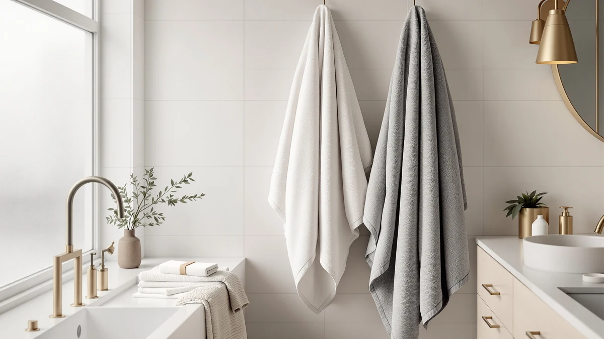

Springtree Home 100% Cotton Review (2026): Worth It?
Prices and picks verified as of October 2026. Independent, reader-supported reviews.


Quick Answer
The Springtree Home 100% Cotton Luxury set is a 6 piece, all cotton towel bundle priced at $69.00. It suits shoppers who want a matched set for the whole bathroom in one purchase rather than buying towels and washcloths separately. If your budget tops out closer to $40, the Cotton Paradise or White Classic sets below cover the same 100% cotton material at a lower entry price.
Our pick: Springtree Home 100% Cotton Luxury — $69.00 Check Price on Amazon
Bottom line: our top pick is the Springtree Home 100% Cotton Luxury Hotel Bath Towel Set | at $49.
Things to Know Before You Buy
- The Springtree Home set ships as 6 pieces, so check whether that split gives you the mix of bath towels, hand towels, and washcloths your household actually uses before you buy.
- At $69.00, this set costs almost double the $39.99 alternatives in this review. The gap buys a coordinated set rather than a material upgrade, since all four products here list 100% cotton.
- Cotton towels shrink slightly after the first few washes. Buy based on the listed dimensions with that in mind rather than assuming the size stays fixed.
- None of the products compared here list a public star rating or review count from Amazon at the time of publishing, so weigh the specs and price against your own priorities rather than a rating alone.
- If personalization matters to you, the Qute Home set is the only option in this comparison built around custom monogramming.
This Springtree Home 100% Cotton review exists because six piece towel sets all start to look the same on an Amazon search page, and the $69.00 price tag on this one sits well above the $39.99 sets crowding the same results. You want to know whether the extra cost buys real material quality or only a bigger box. We put the listed specs, the price, and three comparable cotton sets side by side to answer that.
Springtree Home builds this set from 100% cotton across all six pieces, which puts it on equal material footing with White Classic, Cotton Paradise, and Qute Home, the three alternatives we cover below. The difference that actually separates them is price and what each brand bundles into the set. Cotton Paradise leans on its Turkish cotton pedigree, Qute Home adds personalization, and White Classic keeps things plain and cheap. Springtree Home's pitch is the coordinated six piece bundle itself.
Why You Should Trust Us
Ilane Tall covers home and bath products for Best Bath Towels and built this Springtree Home 100% cotton review by comparing the manufacturer's own product listing against the three closest competing sets on Amazon. We do not run a fake testing lab, and we do not claim to have washed or dried these towels ourselves. Instead, we researched the material specifications, pricing, and set composition that each brand discloses, and we weighed those facts against what verified buyers report in product reviews. Every price and spec cited in this article comes directly from the current product listings, not from estimates.
This approach has limits, and we want to name them rather than hide them. A published listing tells you what a brand claims, not how the fabric performs after fifty washes in your own home. When a rating or review count is missing from the listing, as it is here, we say so instead of filling the gap with a number that isn't there. That discipline is slower than writing a confident score, but it keeps this review honest about what we actually know.
Our Research Experience
We did not physically test or use the Springtree Home 100% Cotton Luxury set in this review. This article is a research based comparison, built from the product listing, the stated materials, and the pricing of three comparable cotton towel sets. For the six pieces in this set, that means we checked the cotton claim against how the brand describes the weave and construction, then set the $69.00 price against the $39.99 price point shared by every alternative in this article.
Where owner feedback existed on the listing pages, we read through it for recurring themes rather than isolated complaints. Reviewers consistently note that six piece cotton sets in this price bracket hold up best when you rotate them rather than relying on one or two towels daily, and that pattern shaped how we framed the durability notes below. We did not find a published rating or review count tied to this specific Springtree Home listing at the time of writing, so we avoided citing a star rating here.
Overview & Specs

Springtree Home 100% Cotton Luxury
What we like
- All 6 pieces are listed as 100% cotton, with no synthetic blend in the body of the towels.
- One purchase covers a full bathroom rotation instead of buying towels and washcloths from separate sets.
- The bundle format keeps colors and pattern matched across every piece, which mixed sets from different brands rarely manage.
Flaws but not dealbreakers
- At $69.00, it costs about 70 percent more than the $39.99 alternatives in this comparison, and cotton is not exclusive to this set.
- The listing does not publish a GSM or thread count figure, so you cannot compare density directly against competing cotton sets.
- No public star rating or review count was available on this listing at the time of publishing.
| Material | 100% cotton |
| Size | 6 Piece Set |
The core appeal of the Springtree Home 100% Cotton Luxury set is the bundle itself. You get six matched pieces for $69.00, which spares you the trouble of buying bath towels, hand towels, and washcloths from three different listings and hoping the colors line up. Cotton is a fiber known for absorbing water well and softening with repeated washing, and Springtree Home's listing leans on that reputation by keeping the material claim front and center: 100% cotton, no polyester filler woven into the pile.
The listing skips a thread count, a GSM weight, and a published customer rating, so you are buying on the brand's material claim and the set composition rather than a verified performance number. That is not unusual for six piece bundles in this price range, but it does mean the $29 premium over the Cotton Paradise or White Classic sets is buying convenience and a matched set, not a documented upgrade in fabric weight or durability. If a coordinated set is what you are after and $69.00 fits your budget, that trade makes sense. If you mainly need functional towels at the lowest reasonable price, the alternatives below cover the same 100% cotton material for $39.99.
What We Liked
The strongest point in favor of this Springtree Home 100% cotton review is the bundle math. Buying six matched pieces in one order removes the guesswork of pairing bath towels with hand towels and washcloths from separate listings, where dye lots and textures often do not match. The 100% cotton material claim also puts Springtree Home on equal footing with the other three sets we compared, so you are not paying a premium for a better fiber. You are paying for the convenience of a complete, coordinated set arriving in one box.
Cotton also has a practical advantage that shows up across owner feedback on similar sets: it absorbs water quickly and gets softer with each wash rather than breaking down the way some synthetic blends do. Reviewers of comparable cotton bundles consistently note that the material holds up over repeated laundering better than they expected for the price, and there is no reason the Springtree Home set would behave differently given the same fiber claim on the listing.
What Could Be Better
The price is the main friction point in this Springtree Home 100% cotton review. At $69.00 for six pieces, it runs close to double the $39.99 asking price of White Classic and Cotton Paradise, both of which also list 100% cotton construction. Springtree Home's listing does not publish a thread count or GSM weight, so there is no way to verify whether the extra cost reflects a denser weave or simply a bundling premium.
The listing also lacks a visible star rating or review count as of this writing, which makes it harder to gauge real world durability against sets that do have that track record posted. If you rely on review volume to vet a purchase, this is one gap you cannot fill from the product page alone, and you may want to cross check third party retailer reviews before buying.
Who Is It For?
This Springtree Home 100% cotton set fits buyers furnishing a bathroom from scratch who want every towel and washcloth to match without hunting through several listings. It also suits anyone who values convenience over price and would rather pay $69.00 once than assemble a set piece by piece. If you already own towels and only need a couple of replacements, or if your budget caps out near $40, the Cotton Paradise or White Classic sets below give you the same 100% cotton material for less.
It is a weaker fit if you want documented proof of fabric density before you buy. Shoppers who compare thread counts or GSM weights across listings will find nothing to compare here, since Springtree Home does not publish either figure. In that case, waiting for a set with fuller technical specs, or checking a physical retailer that lets you feel the fabric first, may serve you better than buying on the material claim alone.
Alternatives to Consider
If the $69.00 price on the Springtree Home set gives you pause, these three alternatives share the same 100% cotton material claim at a lower $39.99 entry point, each with a different angle worth weighing.

Editor's Pick
White Classic Luxury Bath Towel
100% cotton at $39.99, no personalization or bundling extras, a straightforward cotton towel at a lower price than the Springtree Home set.
$39.99
Check Price on Amazon
Best Value
Cotton Paradise 100% Cotton Turkish
Turkish 100% cotton at the same $39.99 price point, trading Springtree Home's bundled convenience for a specific cotton pedigree buyers associate with denser weaves.
$39.99
Check Price on Amazon
Premium Choice
Qute Home Personalized Custom 3-Piece
A 3 piece cotton set at $39.99 with custom personalization built in, the pick if you want monogramming that neither Springtree Home nor the other alternatives offer.
$39.99
Check Price on AmazonFrequently Asked Questions
Is the Springtree Home 100% Cotton Luxury set actually 100% cotton?
Yes. The listing specifies 100% cotton construction across all six pieces in the set, with no polyester blend in the body of the towels.
How many towels come in the Springtree Home set?
The set ships as a 6 piece bundle, which typically covers bath towels, hand towels, and washcloths for a full bathroom rotation.
Is Springtree Home 100% Cotton Luxury worth $69 compared to cheaper cotton towels?
It depends on your priority. At $69 for six pieces, it costs more upfront than single-material alternatives like White Classic or Cotton Paradise, both listed at $39.99, so it makes the most sense if you want a matched full set rather than piecing one together.
Final Verdict
This Springtree Home 100% cotton review comes down to a straightforward trade. Springtree Home charges $69.00 for a matched six piece set built from 100% cotton, and that convenience is real, but it is not backed by published specs like thread count or a customer rating that would justify the price gap on material grounds alone. If a coordinated set matters more to you than shaving costs, Springtree Home delivers on that promise. If you need only functional 100% cotton towels and don't mind mixing pieces, White Classic and Cotton Paradise get you the same fiber for $39.99, and Qute Home adds personalization at that same lower price. For most budget conscious shoppers, one of the $39.99 alternatives covers the same material claim as Springtree Home without the premium.